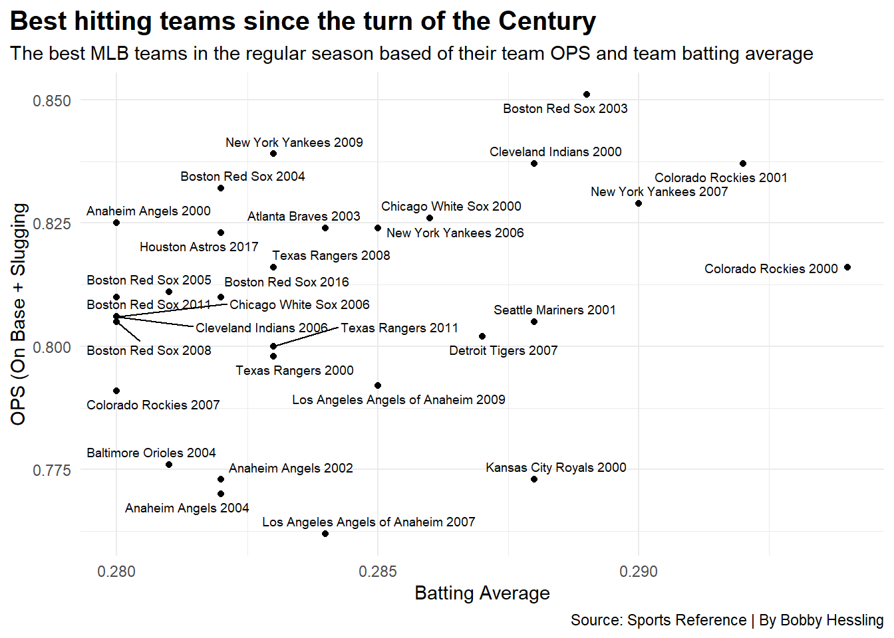
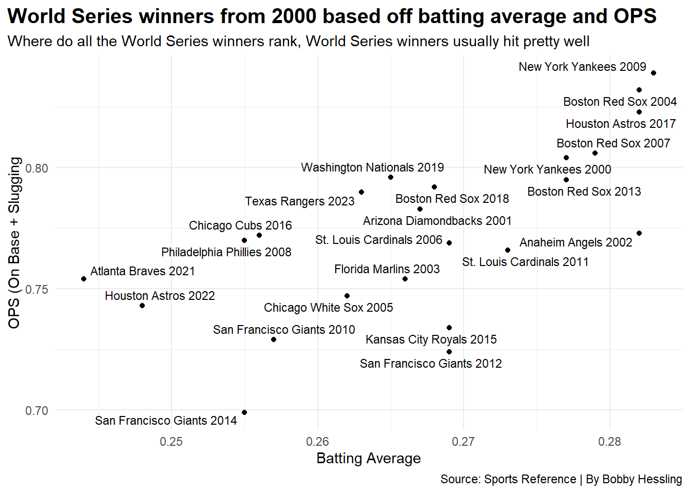
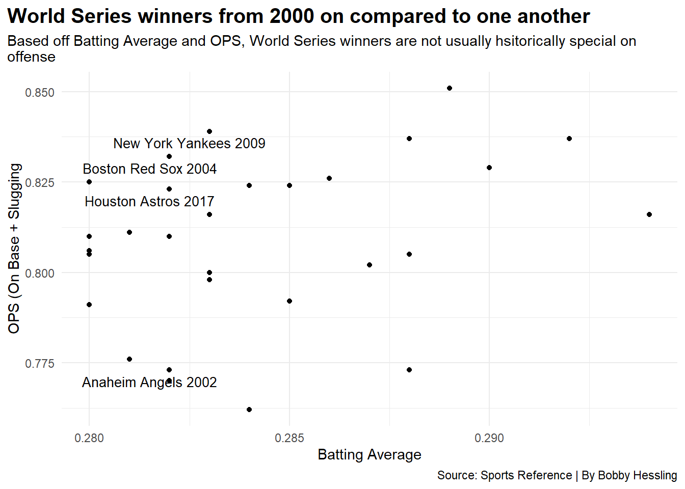
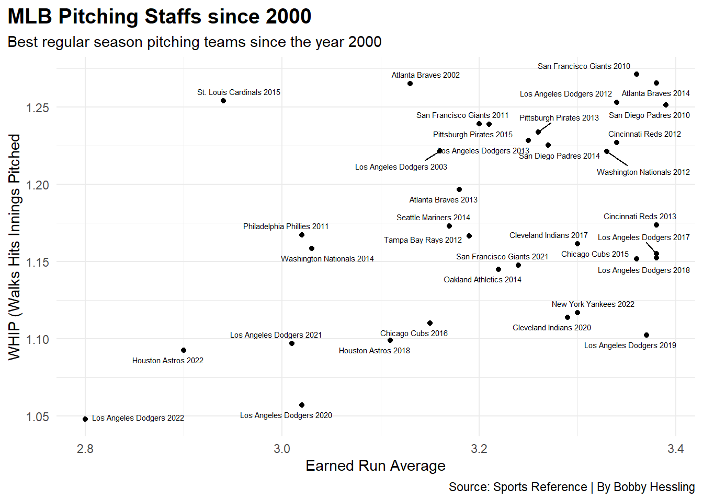
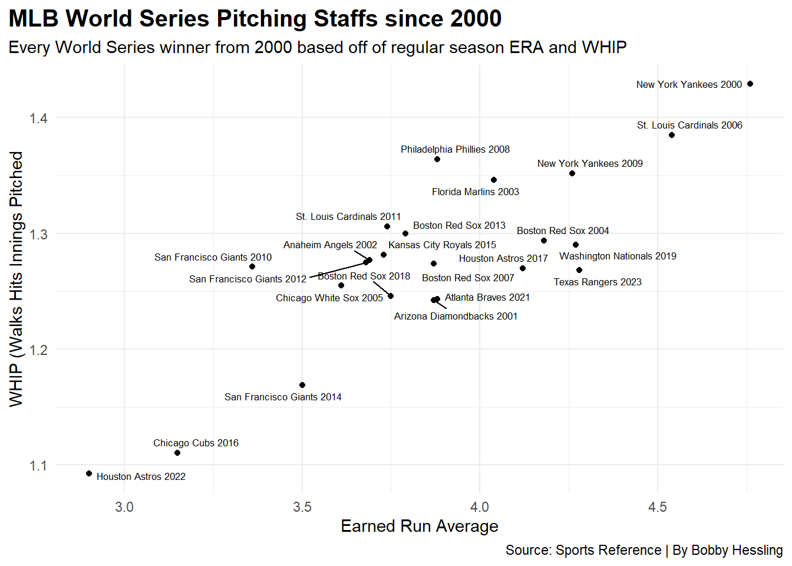
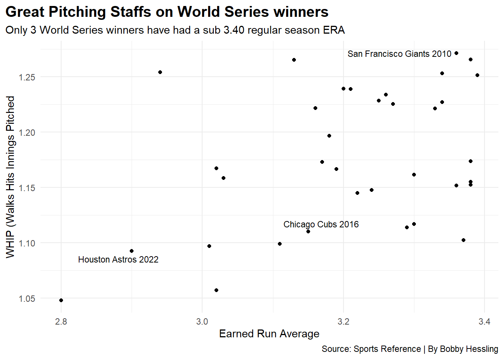

Does Being Good in the Regular Season Mean Anything?
Author
Bobby Hessling
Published
May 4, 2024
Year in year out the same Number of teams make the postseason in baseball. Sometimes the same teams are common visitors in the MLB postseason but struggle in the fine month of October. The Dodgers, have won a single World Series since 2014 and have been in the fall classic every year since 2014, that World Series was in the Covid season. Do teams that have outstanding regular season success usually win in the post season or are they like the Dodgers and watching Joe Davis and John Smoltz call the world series from their couch.
First look is at the batting numbers. Since 2000 you have a lot of teams who’s batting average is at .280 or better for the season, which for a full team is really good, a few really good teams that are above a .285 average. This is also teams who are scoring more ten 5 runs per game, because a team that scores a lot means they should be winning more games than their opponent. First thing you notice, not a whole lot of World Series winners near the top or at all on this chart.
Code
library(tidyverse)library(ggrepel)library(gt)mlbbatting0023 <-read_csv("mlbbatting0023.csv")mlbpitching0023 <-read_csv("mlbpitching0023.csv")wswinnersbatting <- mlbbatting0023 |>filter( team_season =="New York Yankees 2000"| team_season =="Arizona Diamondbacks 2001"| team_season =="Anaheim Angels 2002"| team_season =="Florida Marlins 2003"| team_season =="Boston Red Sox 2004"| team_season =="Chicago White Sox 2005"| team_season =="St. Louis Cardinals 2006"| team_season =="Boston Red Sox 2007"| team_season =="Philadelphia Phillies 2008"| team_season =="New York Yankees 2009"| team_season =="San Francisco Giants 2010"| team_season =="St. Louis Cardinals 2011"| team_season =="San Francisco Giants 2012"| team_season =="Boston Red Sox 2013"| team_season =="San Francisco Giants 2014"| team_season =="Kansas City Royals 2015"| team_season =="Chicago Cubs 2016"| team_season =="Houston Astros 2017"| team_season =="Boston Red Sox 2018"| team_season =="Washington Nationals 2019"| team_season =="Atlanta Braves 2021"| team_season =="Houston Astros 2022"| team_season =="Texas Rangers 2023") topbatting <- mlbbatting0023 |>filter( ba >"0.279"& r_g >"5")topbattingws <- topbatting |>filter( team_season =="Anaheim Angels 2002"| team_season =="Boston Red Sox 2004"| team_season =="New York Yankees 2009"| team_season =="Houston Astros 2017")ggplot() +geom_point(data=topbatting, aes(x=ba, y=ops)) +geom_text_repel(data=topbatting, aes(x=ba, y=ops, label=team_season), size =2.5 ) +labs(x="Batting Average", y="OPS (On Base + Slugging", title="Best hitting teams since the turn of the Century", subtitle="The best MLB teams in the regular season based of their team OPS and team batting average", caption="Source: Sports Reference | By Bobby Hessling" ) +theme_minimal()

Filtering just World Series winners you have a few teams who’s OPS and batting average is shocking. Makes you wonder how they not only won the World Series but made the playoffs.
Code
ggplot() +geom_point(data=wswinnersbatting, aes(x=ba, y=ops)) +geom_text_repel(data=wswinnersbatting, aes(x=ba, y=ops, label=team_season), size =3 ) +labs(x="Batting Average", y="OPS (On Base + Slugging", title="World Series winners from 2000 based off batting average and OPS", subtitle="Where do all the World Series winners rank, World Series winners usually hit pretty well", caption="Source: Sports Reference | By Bobby Hessling" ) +theme_minimal()

The Giants team OPS is the lowest by a wide margin, and they had all three of the lowest team OPS that won a World Series? What about the Atlanta Braves in 2021, their team batting average was sub .250, they won it all? Teams near the top, makes sense. The Yankees, those Red Sox teams, that Astros team it all makes sense.
Going back these are the World Series winners on the first scatter plot. A Whole lot of teams that didn’t win who did some really impressive things in the regular season.
Code
ggplot() +geom_point(data=topbatting, aes(x=ba, y=ops)) +geom_text_repel(data=topbattingws, aes(x=ba, y=ops, label=team_season), size =3.5 ) +labs(x="Batting Average", y="OPS (On Base + Slugging", title="World Series winners from 2000 on compared to one another", subtitle="Based off Batting Average and OPS, World Series winners are not usually hsitorically special onoffense ", caption="Source: Sports Reference | By Bobby Hessling" ) +theme_minimal()

What about power teams, Do teams that hit for power have better success in winning the World Series, bats don’t just go cold do they.
Code
wswinnershrs <- wswinnersbatting |>select(team_season, hr) |>arrange(desc(hr))wswinnershrs |>gt() |>cols_label(hr ="HR",team_season ="Team & Year" ) |>tab_header(title ="Which World Series Team hit the most home runs in the season",subtitle ="Every World Series winner since 2000 and where they ranked in the regularseason with home runs" ) |>tab_style(style =cell_text(color ="black", weight ="bold", align ="left"),locations =cells_title("title") ) |>tab_style(style =cell_text(color ="black", align ="left"),locations =cells_title("subtitle") ) |>tab_source_note(source_note =md("**By:** Bobby Hessling | **Source:** MLB Sports Reference") ) |>tab_style(locations =cells_column_labels(columns =everything()),style =list(cell_borders(sides ="bottom", weight =px(3)),cell_text(weight ="bold", size=12) ) ) |>opt_row_striping() |>opt_table_lines("none")
Which World Series Team hit the most home runs in the season
Every World Series winner since 2000 and where they ranked in the regular season with home runs
Team & Year
HR
New York Yankees 2009
244
Atlanta Braves 2021
239
Houston Astros 2017
238
Texas Rangers 2023
233
Washington Nationals 2019
231
Boston Red Sox 2004
222
Philadelphia Phillies 2008
214
Houston Astros 2022
214
Arizona Diamondbacks 2001
208
Boston Red Sox 2018
208
New York Yankees 2000
205
Chicago White Sox 2005
200
Chicago Cubs 2016
199
St. Louis Cardinals 2006
184
Boston Red Sox 2013
178
Boston Red Sox 2007
166
San Francisco Giants 2010
162
St. Louis Cardinals 2011
162
Florida Marlins 2003
157
Anaheim Angels 2002
152
Kansas City Royals 2015
139
San Francisco Giants 2014
132
San Francisco Giants 2012
103
By: Bobby Hessling | Source: MLB Sports Reference
First look at your World Series winner, Braves had 239 with a team that hit below .250. Sometimes this sport doesn’t make any sense.
Code
tophrteams <- mlbbatting0023 |>filter(hr >240)topbattinghrs <- tophrteams |>select(team_season, hr) |>arrange(desc(hr))topbattinghrs |>gt() |>cols_label(hr ="HR",team_season ="Team & Year" ) |>tab_header(title ="Which World Series Team hit the most home runs in the season",subtitle ="Every World Series winner since 2000 and where they ranked in the regularseason with home runs" ) |>tab_style(style =cell_text(color ="black", weight ="bold", align ="left"),locations =cells_title("title") ) |>tab_style(style =cell_text(color ="black", align ="left"),locations =cells_title("subtitle") ) |>tab_source_note(source_note =md("**By:** Bobby Hessling | **Source:** MLB Sports Reference") ) |>tab_style(locations =cells_column_labels(columns =everything()),style =list(cell_borders(sides ="bottom", weight =px(3)),cell_text(weight ="bold", size=12) ) ) |>opt_row_striping() |>opt_table_lines("none")|>tab_style(style =list(cell_fill(color ="blue"),cell_text(color ="white") ),locations =cells_body(rows = team_season =="New York Yankees 2009"))
Which World Series Team hit the most home runs in the season
Every World Series winner since 2000 and where they ranked in the regular season with home runs
Team & Year
HR
Minnesota Twins 2019
307
Atlanta Braves 2023
307
New York Yankees 2019
306
Houston Astros 2019
288
Los Angeles Dodgers 2019
279
New York Yankees 2018
267
Toronto Blue Jays 2021
262
Texas Rangers 2005
260
Toronto Blue Jays 2010
257
Oakland Athletics 2019
257
Chicago Cubs 2019
256
New York Yankees 2022
254
Baltimore Orioles 2016
253
Milwaukee Brewers 2019
250
Houston Astros 2000
249
Atlanta Braves 2019
249
Los Angeles Dodgers 2023
249
Toronto Blue Jays 2019
247
Texas Rangers 2001
246
New York Yankees 2012
245
Boston Red Sox 2019
245
Toronto Blue Jays 2000
244
New York Yankees 2009
244
Atlanta Braves 2022
243
Chicago White Sox 2004
242
New York Yankees 2004
242
New York Mets 2019
242
New York Yankees 2017
241
San Francisco Giants 2021
241
By: Bobby Hessling | Source: MLB Sports Reference
Well, no. Home Runs do take you to the playoffs but as the weather changes so do the bats and they can fizzle out. Minnesota with their 307 that lead to nothing. Also I think you can argue that baseball’s are juiced in 2019. Very 2019 top heavy. But onlly one team on this whole list and its the New York Yankees back 2009.
Now what about pitching. Do the great pitching teams win more World Series. It is a huge part of the game so they have to be right?
First the strikeout heavy teams.
Code
mlbpitching <- mlbpitching0023 |>mutate(WHIP = (bb+h)/ip)wswinnerspitching <- mlbpitching |>filter( team_season =="New York Yankees 2000"| team_season =="Arizona Diamondbacks 2001"| team_season =="Anaheim Angels 2002"| team_season =="Florida Marlins 2003"| team_season =="Boston Red Sox 2004"| team_season =="Chicago White Sox 2005"| team_season =="St. Louis Cardinals 2006"| team_season =="Boston Red Sox 2007"| team_season =="Philadelphia Phillies 2008"| team_season =="New York Yankees 2009"| team_season =="San Francisco Giants 2010"| team_season =="St. Louis Cardinals 2011"| team_season =="San Francisco Giants 2012"| team_season =="Boston Red Sox 2013"| team_season =="San Francisco Giants 2014"| team_season =="Kansas City Royals 2015"| team_season =="Chicago Cubs 2016"| team_season =="Houston Astros 2017"| team_season =="Boston Red Sox 2018"| team_season =="Washington Nationals 2019"| team_season =="Atlanta Braves 2021"| team_season =="Houston Astros 2022"| team_season =="Texas Rangers 2023") toppitching <- mlbpitching |>filter(era <3.40)mlbstrikeouts <- mlbpitching0023 |>filter(so9 >"9.5") |>mutate(highlight =case_when( team_season =="Houston Astros 2017"~"Yes", team_season =="Boston Red Sox 2018"~"Yes",TRUE~"No" ))ggplot() +geom_bar(data=mlbstrikeouts, aes(x=reorder(team_season, so9), weight=so9, fill=highlight)) +scale_fill_manual(values=c("black", "blue")) +coord_flip() +theme_minimal() +labs(x="MLB Teams",y="Strikeouts Per 9",title="MLB Teams with the Highest K per 9 since 2000", subtitle="Where some of the best pithcing staffs since 2000 rank with the rest of everyone else", caption="Source: Sports-Reference.com | By Bobby Hessling" ) +theme_minimal() +theme(plot.title =element_text(size =15, face ="bold"),plot.title.position ="plot",legend.position ="none" )
So I guess strikeout heavy teams like the home run heavy teams don’t always translate to World Series success. There are some random teams on this. The 2019 Reds? The 2020 Phillies? The 2021 Reds? None of those teams even made the playoffs.
How about the 2017 Astros, sure they were cheating when they were batting, but while they were pitching they weren’t cheating. Really impressive. That Red Sox team was also nasty.
ERA and WHIP are both huge factors in success, if you can keep the base runners low and don’t allow to many runners to cross the plate than you should win your fair share of games.
Code
ggplot() +geom_point(data=toppitching, aes(x=era, y=WHIP) ) +geom_text_repel(data=toppitching, aes(x=era, y=WHIP, label=team_season), size =2 ) +labs(x="Earned Run Average", y="WHIP (Walks Hits Innings Pitched", title="MLB Pitching Staffs since 2000", subtitle="Best regular season pitching teams since the year 2000", caption="Source: Sports Reference | By Bobby Hessling" ) +theme_minimal() +theme(plot.title =element_text(size =15, face ="bold"),plot.title.position ="plot")

A whole lot of Dodgers teams. So again World Series winner, where do they sit with team ERA and WHIP.
Code
ggplot() +geom_point(data=wswinnerspitching, aes(x=era, y=WHIP) ) +geom_text_repel(data=wswinnerspitching, aes(x=era, y=WHIP, label=team_season), size =2.25 ) +labs(x="Earned Run Average", y="WHIP (Walks Hits Innings Pitched", title="MLB World Series Pitching Staffs since 2000", subtitle="Every World Series winner from 2000 based off of regular season ERA and WHIP", caption="Source: Sports Reference | By Bobby Hessling" ) +theme_minimal() +theme(plot.title =element_text(size =15, face ="bold"),plot.title.position ="plot")

Teams with ERA’s in the 4’s that won the World Series. That 2000 Yankees team manager to post a +4.50 ERA and won the whole thing. that is impressive. That Cardinals team led by Tony La Russa had 83 wins and won it all. It shows that it doesn’t matter what you do in the regular season as long as you manage to get to the postseason nothing matter because once you get there you can win the World Series.
Again looking at the World Series winners compared to the other teams since the turn of the century that have been extremely good.
Code
wswinnersgreatpicthing <- wswinnerspitching |>filter(era <"3.40")ggplot() +geom_point(data=toppitching, aes(x=era, y=WHIP) ) +geom_text_repel(data=wswinnersgreatpicthing, aes(x=era, y=WHIP, label=team_season), size =3 ) +labs(x="Earned Run Average", y="WHIP (Walks Hits Innings Pitched", title="Great Pitching Staffs on World Series winners", subtitle="Only 3 World Series winners have had a sub 3.40 regular season ERA", caption="Source: Sports Reference | By Bobby Hessling" ) +theme_minimal() +theme(plot.title =element_text(size =15, face ="bold"),plot.title.position ="plot")

The 2022 Astros, the 2016 Cubs, the 2010 Giants. The only teams that are great in the regular season and then won it all.
Overall you see that it doesn’t matter how good you are in the regular season. As long as you get into the postseason anything is possible. Be good, but not too good where you run out of fuel and crash and burn come October.